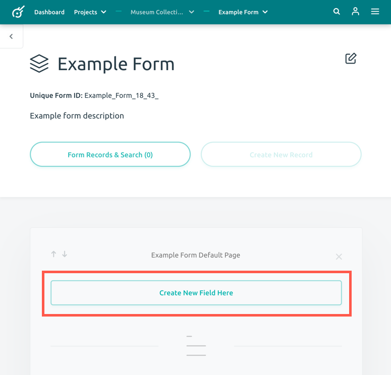
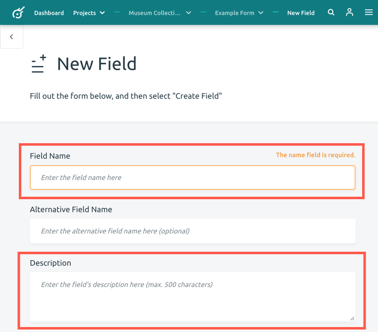
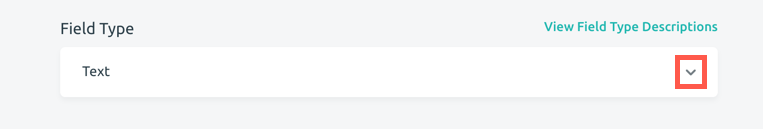
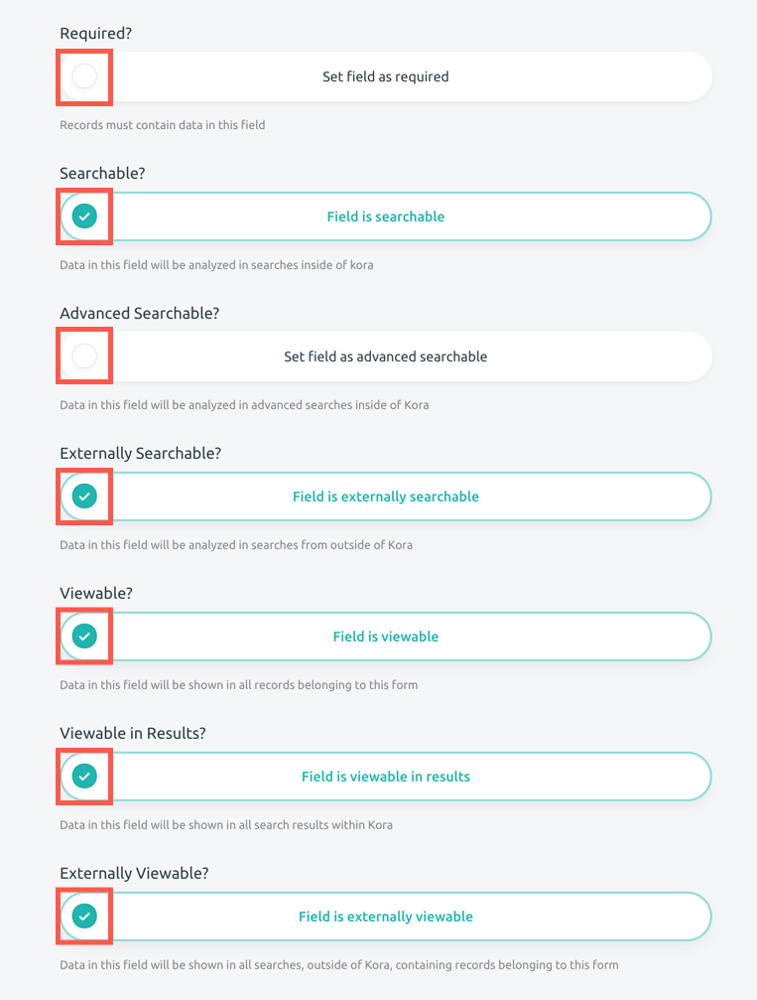
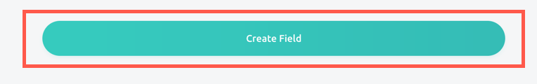

Creating Fields
Fields are the metadata items that can be documented in a record. These can include catalog numbers, site names, item descriptions, images, archival documents, etc. Once you have created your form, you have the ability to add and organize your fields.
-
After you have created your form, it will bring you to that form's page. Below the title, you will see (Your Form Name) Default Page. Click the Create New Field Here button.

-
This will bring you to a New Field form. Here you will need to add your Field Name and the Description of the field.

-
Then select your field type by clicking on the dropdown icon located on the right side of the box. Options include text, number, list, date, file, and specialty fields. To learn more about individual field types, visit the Understanding Field Types Guide.

-
The second half of the New Field form lists seven questions related to the searchability, viewability, and requirement of the field. If you would like to select one of the following options, click the circle on the left of the button. This will highlight the outline of the button in blue and show a checkmark in the circle.
- Required? Choose whether this field will be required when entering a record. This means that every record entered in this form will need to have this field type recorded.
- Searchable? Data in this field will be able to be analayzed in searches inside of Kora.
- Advance Searchable? Data in this field will be able to be analyzed in advanced searches inside of Kora.
- Externally Searchable? Data in this field will be analyzed in searches from outside of Kora.
- Viewable? Data in this field will be shown in all records belonging to this form.
- Viewable in Results? Data in this field will be shown in all search results within Kora.
- Externally Viewable Data in this field will be shown in all searches, outside of Kora, containing records belonging to this form.

-
Once you have completed your field form, click the blue Create Field button on the bottom of the page.

You can continue adding new fields to your form from the form page. If you would like to re-organize your fields, visit the Creating a Multipage Form Guide. This guide will show you how to rearrange your fields within a page or move them to additional pages.